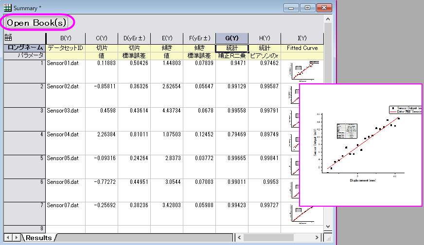

分析テンプレートを使用した複数ファイルのバッチ処理
AnalysisTemplate-BatchProcess
概要
Originは、複数のファイルをインポートするか、既存のデータセットを読み込んで、以前に作成した分析テンプレートを使用してバッチ解析を実行できます。
このチュートリアルでは、一般的なファイル構造の複数のテキストファイルをインポートし、線形フィットを実行するように設定された分析テンプレートを使用してそれらを1つずつ処理する方法について説明します。
 | バッチ処理ツールほど多くのオプションは提供されていませんが、このチュートリアルで概説されている手順を使用して、アクティブなブックでインポートおよび分析操作を「複製」できます。
|
学習する項目
このチュートリアルでは、以下の項目について解説します。
- バッチ処理の出力を収集するために結果集計シートを含む分析テンプレートを作成
- 分析テンプレートを使用した複数ファイルのバッチ処理
ステップ
このチュートリアルは2つのパートに分かれています。
- 分析テンプレートを作成します。テンプレートはバッチ処理の分析の出力を収集する集計シートを含む空のフレームワークです。
- 先ほど保存した分析テンプレートを使用して複数ファイルに対してバッチ処理を実行します。
結果集計シートを含む分析テンプレートの準備
- バッチ処理は類似の構造をしたデータファイルで動作するため、最初に典型的なデータファイルをインポートします。 新規のワークブックを作成し、データ:ファイルに接続:Text/CSVを選択します。<Origin EXE folder>\Samples\Curve Fitting\Sensor01.dat をブラウズし、これを選択します。CSVインポートオプションをデフォルトのまま適用しOKをクリックしてデータをインポートします。
- 次に、データに線形フィットをしていきます。 B列を選択した状態で、解析：フィット：線形フィットを選択します。 再計算を自動に設定し、さらにOKをクリックします。(自動を選択すると、新たな入力を与えた場合に結果が自動で再計算されます。）確認メッセージではいを選択し、FitLinear1レポートシートを開きます。
- 次に、結果シートをワークブックに追加して、バッチ分析から主要な統計を収集します。FitLinear1に移動し、概要の表の隣にあります、下矢印ボタンをクリックして、新しいシートとしてコピーを作成を選択してください。
 ボタンを2回クリックして、概要シートに新しい列を2つ追加します。
ボタンを2回クリックして、概要シートに新しい列を2つ追加します。
- ピアソンのrを概要に追加したいのでFitLinear1に戻り、統計の表を探し、値の隣にあるキャプションをクリックしてから右クリックしてコピーを選択します。概要に移動し、G列のパラメータセルで右クリックしてリンクの貼り付けを選択します。ピアソンのrの値をコピーし、G列の１行目にリンクの貼り付けを行います。
- 次に、概要シートにフィット線を含むデータプロットを概要シートに追加します。FitLinear1に戻り、フィット曲線のプロットまでスクロールし、プロットを右クリックしてコピーを選択します。概要シートに戻り、H列の1行目で右クリックしてリンクの貼り付けを選択します。この列のロングネームセルにフィット曲線を追加します。
- 分析テンプレートとしてワークブックを保存するために、ファイル：ワークブックを分析テンプレートとして保存を選択し、テンプレートの名前をSensor Analysisとしてデフォルトのユーザファイルの場所に保存するようにします。保存 をクリックします。
複数データファイルに対しバッチ処理を実行する
次に分析テンプレートを使用して、多数のデータファイルにバッチ処理を行い、概要を出力します。
- 新しいプロジェクトを作成しファイル：バッチ処理を選択するか標準ツールバーからボタンをクリックします。
- バッチ処理モードを分析テンプレートをロードに設定し、ユーザファイルフォルダをブラウズしてSensor Analysis.ogwuを選択します。
- データソースをファイルからインポートに設定し、ファイルリストの右側のブラウズボタンで<Origin EXE Folder>\Samples\Curve FittingにあるSensor02.datからSensor07.datまでのファイルを追加します。
- データセット識別子をファイル名に設定し、ソースファイル名を概要シートに出力するようにタグ付けします。
- データシートをSensor01に、結果シートを概要に設定します。
- 中途生成されたワークブックの削除にチェックを入れます。（Origin 2018以降には、必要に応じて、概要シートのOpen Book(s)ボタンでそれぞれの中途生成されたワークブックを再生成するオプションがあります。）
-

- OKをクリックします。全てのデータファイルがファイルごとの分析に要約されて概要ワークブックで処理されます。
- 